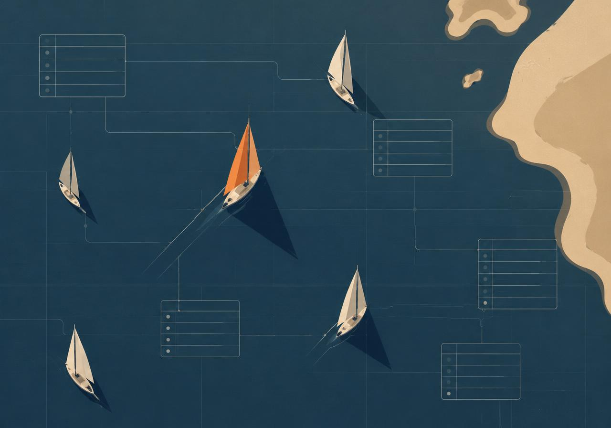

The problem
This project analyses sailor and charter data using SQL. The objective was to design a relational database and extract business insights through SQL queries.
Process
- 01Schema designIdentified entities and relationships, and chose primary and foreign keys for data integrity and efficient querying.
- 02Tables & keysCreated the database and all tables in SQL Server Management Studio, enforcing relationships with constraints.
- 03Data loadingInserted the datasets with SQL scripts, paying attention to data types, nulls and formatting.
- 04Quality checksVerified record counts, detected missing values and confirmed referential integrity.
- 05ExplorationWrote exploratory queries to understand the structure and distribution of the data.
- 06Business questionsAnswered the defined questions with joins, aggregations, filtering and subqueries.
- 07OptimisationRefined joins and removed unnecessary calculations for better performance.
- 08Insight extractionInterpreted results to explain trends and behaviours, not just numbers.
- 09DocumentationOrganised the SQL scripts, summarised results and described the process.
Key insights
- Identified sailors who chartered specific boats — and those who never did — highlighting different usage behaviours.
- Analysed activity by boat characteristics such as colour, revealing preferences for certain boat types.
- Used pattern matching to find sailors by name characteristics, demonstrating advanced SQL filtering.
- Combined multiple tables into a complete charter history: sailor names, boat IDs and charter dates.
The outcome